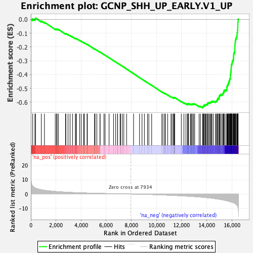

| | | Dataset | DE_genes2 |
| Phenotype | NoPhenotypeAvailable |
| Upregulated in class | na_neg |
| GeneSet | GCNP_SHH_UP_EARLY.V1_UP |
| Enrichment Score (ES) | -0.6409717 |
| Normalized Enrichment Score (NES) | -2.106013 |
| Nominal p-value | 0.0 |
| FDR q-value | 0.0 |
| FWER p-Value | 0.0 |
Table: GSEA Results Summary

Fig 1: Enrichment plot: GCNP_SHH_UP_EARLY.V1_UP
Profile of the Running ES Score & Positions of GeneSet Members on the Rank Ordered List
| PROBE | GENE SYMBOL | GENE_TITLE | RANK IN GENE LIST | RANK METRIC SCORE | RUNNING ES | CORE ENRICHMENT | | 1 | KIAA2013 | | | 147 | 5.471 | 0.0037 | No |
| 2 | SLC35E1 | | | 321 | 4.329 | 0.0031 | No |
| 3 | BCKDHA | | | 376 | 4.092 | 0.0092 | No |
| 4 | CD276 | | | 832 | 2.977 | -0.0117 | No |
| 5 | STAT5A | | | 1081 | 2.620 | -0.0207 | No |
| 6 | WFDC21P | | | 1942 | 1.797 | -0.0691 | No |
| 7 | IRF5 | | | 2044 | 1.723 | -0.0713 | No |
| 8 | CD2BP2 | | | 2088 | 1.691 | -0.0700 | No |
| 9 | DCPS | | | 2189 | 1.628 | -0.0723 | No |
| 10 | TMPRSS2 | | | 2755 | 1.306 | -0.1038 | No |
| 11 | DOLPP1 | | | 2785 | 1.294 | -0.1026 | No |
| 12 | SDC3 | | | 2958 | 1.213 | -0.1103 | No |
| 13 | ADCY6 | | | 3119 | 1.146 | -0.1174 | No |
| 14 | SLC27A1 | | | 3317 | 1.069 | -0.1270 | No |
| 15 | HMGCL | | | 3539 | 0.993 | -0.1382 | No |
| 16 | RNF103 | | | 3598 | 0.969 | -0.1395 | No |
| 17 | JMJD8 | | | 3622 | 0.960 | -0.1387 | No |
| 18 | FCGRT | | | 3887 | 0.871 | -0.1528 | No |
| 19 | FNTB | | | 4007 | 0.835 | -0.1581 | No |
| 20 | TINF2 | | | 4198 | 0.779 | -0.1679 | No |
| 21 | ICAM5 | | | 4254 | 0.762 | -0.1695 | No |
| 22 | IRF6 | | | 4473 | 0.700 | -0.1812 | No |
| 23 | MAPK14 | | | 4502 | 0.693 | -0.1813 | No |
| 24 | LOXL2 | | | 5061 | 0.555 | -0.2141 | No |
| 25 | MYB | | | 5112 | 0.540 | -0.2159 | No |
| 26 | RYK | | | 5249 | 0.506 | -0.2230 | No |
| 27 | RGCC | | | 5499 | 0.450 | -0.2372 | No |
| 28 | PLCG2 | | | 5511 | 0.448 | -0.2368 | No |
| 29 | DIO1 | | | 5817 | 0.381 | -0.2545 | No |
| 30 | ADAMTS1 | | | 5908 | 0.364 | -0.2592 | No |
| 31 | COX7B | | | 6225 | 0.297 | -0.2778 | No |
| 32 | FAM220A | | | 6583 | 0.226 | -0.2991 | No |
| 33 | BEX4 | | | 6749 | 0.193 | -0.3087 | No |
| 34 | KBTBD7 | | | 6898 | 0.171 | -0.3173 | No |
| 35 | CYP2C9 | | | 6908 | 0.169 | -0.3175 | No |
| 36 | ATL2 | | | 7102 | 0.134 | -0.3290 | No |
| 37 | CSF1 | | | 7141 | 0.127 | -0.3310 | No |
| 38 | MAN1A1 | | | 7278 | 0.101 | -0.3391 | No |
| 39 | OVGP1 | | | 7399 | 0.081 | -0.3462 | No |
| 40 | KIF1B | | | 7620 | 0.044 | -0.3595 | No |
| 41 | EPB41L4B | | | 8172 | -0.037 | -0.3931 | No |
| 42 | NTHL1 | | | 8650 | -0.120 | -0.4219 | No |
| 43 | ELOVL2 | | | 8847 | -0.160 | -0.4335 | No |
| 44 | SNAPC2 | | | 9035 | -0.200 | -0.4444 | No |
| 45 | CD55 | | | 9285 | -0.264 | -0.4590 | No |
| 46 | ARHGEF1 | | | 9389 | -0.286 | -0.4647 | No |
| 47 | POLA2 | | | 9615 | -0.343 | -0.4776 | No |
| 48 | PRMT9 | | | 10424 | -0.593 | -0.5255 | No |
| 49 | VPS4B | | | 10518 | -0.632 | -0.5298 | No |
| 50 | CLIP4 | | | 10658 | -0.681 | -0.5367 | No |
| 51 | CXorf38 | | | 10704 | -0.692 | -0.5378 | No |
| 52 | SHC1 | | | 10890 | -0.762 | -0.5474 | No |
| 53 | UQCC1 | | | 11154 | -0.862 | -0.5614 | No |
| 54 | CDC23 | | | 11236 | -0.896 | -0.5643 | No |
| 55 | GGPS1 | | | 11338 | -0.944 | -0.5683 | No |
| 56 | NCAM2 | | | 11406 | -0.971 | -0.5701 | No |
| 57 | RPL39L | | | 11407 | -0.971 | -0.5679 | No |
| 58 | FTSJ3 | | | 11427 | -0.979 | -0.5668 | No |
| 59 | AFF4 | | | 11444 | -0.986 | -0.5655 | No |
| 60 | CLCN6 | | | 11974 | -1.207 | -0.5950 | No |
| 61 | MPDZ | | | 12184 | -1.320 | -0.6047 | No |
| 62 | MRPL9 | | | 12346 | -1.399 | -0.6113 | No |
| 63 | RC3H2 | | | 12478 | -1.467 | -0.6159 | No |
| 64 | DNAJC3 | | | 12486 | -1.469 | -0.6129 | No |
| 65 | NVL | | | 12529 | -1.491 | -0.6121 | No |
| 66 | NABP1 | | | 12535 | -1.493 | -0.6089 | No |
| 67 | E2F8 | | | 12689 | -1.584 | -0.6146 | No |
| 68 | FOXK1 | | | 12751 | -1.618 | -0.6146 | No |
| 69 | RHPN2 | | | 12822 | -1.668 | -0.6150 | No |
| 70 | E2F3 | | | 12840 | -1.682 | -0.6122 | No |
| 71 | CNOT2 | | | 12943 | -1.739 | -0.6144 | No |
| 72 | TIA1 | | | 12952 | -1.743 | -0.6109 | No |
| 73 | RRM1 | | | 13038 | -1.791 | -0.6119 | No |
| 74 | TBP | | | 13392 | -2.021 | -0.6288 | No |
| 75 | NR0B1 | | | 13499 | -2.097 | -0.6304 | No |
| 76 | VHL | | | 13673 | -2.216 | -0.6359 | Yes |
| 77 | SLC23A2 | | | 13689 | -2.235 | -0.6316 | Yes |
| 78 | AZIN1 | | | 13720 | -2.257 | -0.6282 | Yes |
| 79 | INTS7 | | | 13780 | -2.313 | -0.6265 | Yes |
| 80 | LATS1 | | | 13781 | -2.313 | -0.6212 | Yes |
| 81 | MCM5 | | | 13861 | -2.378 | -0.6205 | Yes |
| 82 | FEN1 | | | 13911 | -2.426 | -0.6179 | Yes |
| 83 | DHFR | | | 13968 | -2.471 | -0.6156 | Yes |
| 84 | NEK9 | | | 14057 | -2.556 | -0.6151 | Yes |
| 85 | TRAIP | | | 14068 | -2.569 | -0.6098 | Yes |
| 86 | FIP1L1 | | | 14083 | -2.583 | -0.6046 | Yes |
| 87 | TYMS | | | 14161 | -2.652 | -0.6032 | Yes |
| 88 | MRPL50 | | | 14240 | -2.734 | -0.6017 | Yes |
| 89 | DHODH | | | 14312 | -2.795 | -0.5996 | Yes |
| 90 | MTA1 | | | 14365 | -2.848 | -0.5962 | Yes |
| 91 | FOSL1 | | | 14422 | -2.905 | -0.5929 | Yes |
| 92 | FBXO45 | | | 14532 | -3.027 | -0.5925 | Yes |
| 93 | UBE2T | | | 14697 | -3.240 | -0.5951 | Yes |
| 94 | PPP1CB | | | 14739 | -3.295 | -0.5900 | Yes |
| 95 | OXSM | | | 14819 | -3.384 | -0.5870 | Yes |
| 96 | NAP1L1 | | | 14844 | -3.416 | -0.5806 | Yes |
| 97 | MSH6 | | | 14863 | -3.443 | -0.5737 | Yes |
| 98 | CCNJ | | | 14959 | -3.584 | -0.5712 | Yes |
| 99 | PARG | | | 14975 | -3.606 | -0.5638 | Yes |
| 100 | NUP107 | | | 15003 | -3.655 | -0.5570 | Yes |
| 101 | GNL3 | | | 15018 | -3.669 | -0.5494 | Yes |
| 102 | CKS2 | | | 15086 | -3.767 | -0.5448 | Yes |
| 103 | SRSF1 | | | 15186 | -3.901 | -0.5419 | Yes |
| 104 | SEH1L | | | 15275 | -4.073 | -0.5378 | Yes |
| 105 | TNPO1 | | | 15312 | -4.132 | -0.5305 | Yes |
| 106 | FNBP4 | | | 15359 | -4.218 | -0.5236 | Yes |
| 107 | ARL5A | | | 15378 | -4.254 | -0.5148 | Yes |
| 108 | STRN3 | | | 15465 | -4.422 | -0.5099 | Yes |
| 109 | OXNAD1 | | | 15591 | -4.681 | -0.5067 | Yes |
| 110 | GTF2H1 | | | 15594 | -4.686 | -0.4960 | Yes |
| 111 | AURKA | | | 15607 | -4.737 | -0.4858 | Yes |
| 112 | KIFC1 | | | 15645 | -4.799 | -0.4770 | Yes |
| 113 | LUC7L2 | | | 15689 | -4.884 | -0.4683 | Yes |
| 114 | RBBP6 | | | 15734 | -4.971 | -0.4595 | Yes |
| 115 | PDS5B | | | 15754 | -5.018 | -0.4491 | Yes |
| 116 | RIMKLB | | | 15809 | -5.155 | -0.4405 | Yes |
| 117 | MCM6 | | | 15829 | -5.218 | -0.4296 | Yes |
| 118 | RLIM | | | 15873 | -5.314 | -0.4200 | Yes |
| 119 | GPATCH2 | | | 15875 | -5.320 | -0.4078 | Yes |
| 120 | PHTF2 | | | 15881 | -5.335 | -0.3958 | Yes |
| 121 | XPO1 | | | 15911 | -5.423 | -0.3850 | Yes |
| 122 | MBTD1 | | | 15925 | -5.457 | -0.3732 | Yes |
| 123 | MLLT10 | | | 15937 | -5.474 | -0.3612 | Yes |
| 124 | SRSF10 | | | 15948 | -5.504 | -0.3492 | Yes |
| 125 | ATF1 | | | 15954 | -5.524 | -0.3367 | Yes |
| 126 | CHEK1 | | | 15965 | -5.552 | -0.3245 | Yes |
| 127 | ABCB10 | | | 16023 | -5.737 | -0.3147 | Yes |
| 128 | LBR | | | 16028 | -5.754 | -0.3017 | Yes |
| 129 | PRC1 | | | 16103 | -5.960 | -0.2925 | Yes |
| 130 | AURKB | | | 16120 | -6.007 | -0.2796 | Yes |
| 131 | SNORD22 | | | 16134 | -6.058 | -0.2664 | Yes |
| 132 | UPF3B | | | 16137 | -6.071 | -0.2525 | Yes |
| 133 | SEC62 | | | 16172 | -6.217 | -0.2402 | Yes |
| 134 | KIF4A | | | 16226 | -6.459 | -0.2286 | Yes |
| 135 | SPDL1 | | | 16232 | -6.486 | -0.2139 | Yes |
| 136 | LARP7 | | | 16238 | -6.503 | -0.1992 | Yes |
| 137 | STYX | | | 16242 | -6.516 | -0.1843 | Yes |
| 138 | MATR3 | | | 16256 | -6.577 | -0.1699 | Yes |
| 139 | RBM39 | | | 16271 | -6.689 | -0.1554 | Yes |
| 140 | ANKRD13C | | | 16303 | -6.872 | -0.1414 | Yes |
| 141 | ANLN | | | 16350 | -7.214 | -0.1275 | Yes |
| 142 | LUC7L3 | | | 16400 | -7.746 | -0.1126 | Yes |
| 143 | STAG2 | | | 16417 | -7.973 | -0.0952 | Yes |
| 144 | PUM2 | | | 16445 | -8.221 | -0.0779 | Yes |
| 145 | SMC2 | | | 16464 | -8.568 | -0.0592 | Yes |
| 146 | MCM10 | | | 16471 | -8.676 | -0.0396 | Yes |
| 147 | TOP2B | | | 16475 | -8.798 | -0.0194 | Yes |
| 148 | TOP2A | | | 16497 | -9.873 | 0.0021 | Yes |
Table: GSEA details [plain text format]
Fig 2: GCNP_SHH_UP_EARLY.V1_UP: Random ES distribution
Gene set null distribution of ES for GCNP_SHH_UP_EARLY.V1_UP